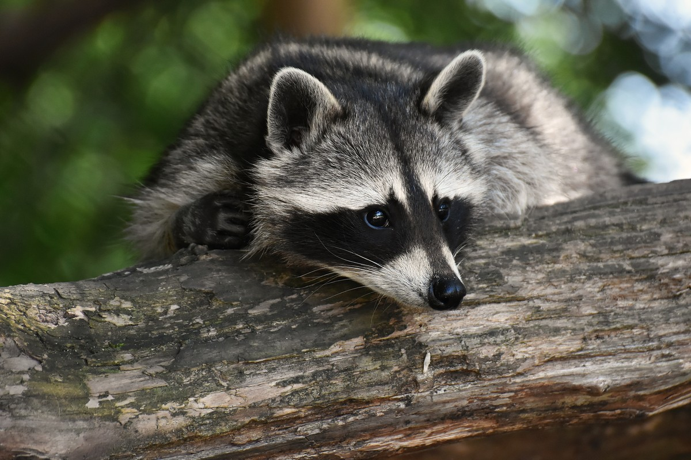

San Gabriel Valley, California · Home resources
Animal trapping: start with an assessment.

Scratching above a ceiling, disturbed garbage, or repeated wildlife visits can have different causes. A qualified wildlife professional can identify the animal and help decide whether prevention, exclusion, or trapping is appropriate.
Record the signs
Note the time, location, sounds, and visible entry points. Observe from a distance and keep pets away. Photos of damage or tracks may help; avoid handling wildlife or droppings.
Reduce attractants
Secure garbage and pet food, remove accessible food scraps, and reduce clutter near the building. Avoid sealing an active opening until a professional has checked for animals or dependent young inside.
Trapping is not always the first step
Ask about identifying the species, removing attractants, and preventing re-entry. If capture is proposed, ask the provider to explain the method, required authorizations, animal handling, and follow-up. Do not assume a captured animal can simply be relocated.
Choose appropriate help
Wildlife work can require different expertise from insect treatment. Ask which species the provider handles and what credentials or permissions apply. For sick or injured wildlife, consult local animal services or a permitted wildlife rehabilitator instead of attempting capture yourself.
Before an assessment
- Have your ZIP code, property type, and sighting timeline ready.
- Describe access to attics, crawl spaces, roofs, or shared areas.
- Ask for clear inspection fees, exclusion or repair scope, and follow-up terms.
California resources
California Department of Fish and Wildlife: human-wildlife conflicts
CDFW: living with wildlife
Bee, wasp, and wildlife services are not confirmed network offerings. Confirm the specific animal, property ZIP code, and provider scope before arranging service.